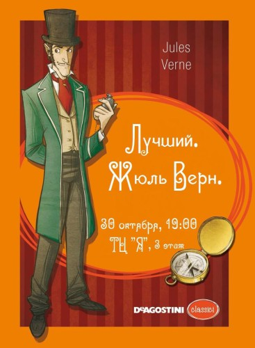
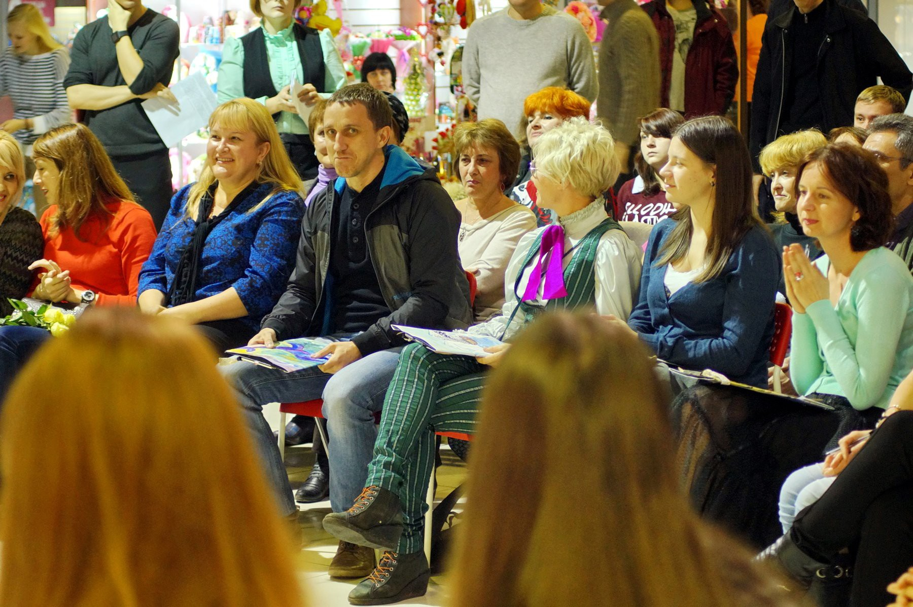
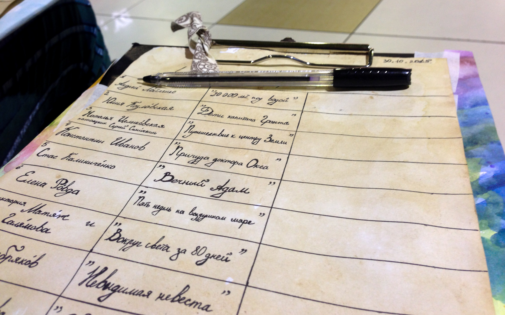
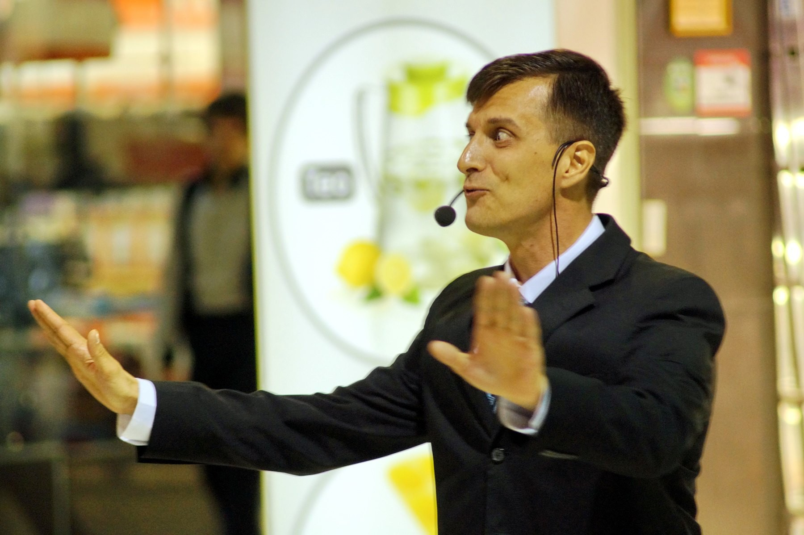

Уже второй год на разных площадках города проводится народный конкурс «Лучший». В каждом конкурсе, а это не этапы, а именно самостоятельные конкурсы, 12 участников читают произведения определённого автора.
Целью авторов конкурса стало попробовать вновь познакомить кемеровчан с литературой. Уйти от навязываемых школьными учителями и режиссёров спектаклей трактовок и заставить нас находить свои.

Всё началось 30 июля 2014 года, когда во внутреннем дворе КемГУ (театра «Встреча») 12 человек читали отрывки из произведений Булгакова. Потом были Хармс, Гоголь, Ерофеев, Чуковский и несколько других авторов. На конкурс «Лучший. Прилепин» приезжал даже сам писатель Захар Прилепин.
Человек я весьма далёкий от театра, спектакли за всю жизнь посещал дважды, но с интересом следил за конкурсом. А месяц назад Андрей пригласил меня, в том числе как стороннего человека, в жюри «Лучший. Жюль Верн», который прошёл в пятницу, 30 ноября, на третьем этаже ТЦ «Я».

Большинство представителей моего поколения, конечно, в детстве читало французского писателя. В своих произведениях Жюль Верн не только предсказал появление в нашей жизни разных вещей вроде акваланга и самолёта. Его романы потрясающим образом сочетают технический прогресс и романтику приключений.
12 участников прочитали нам свои отрывки. Организаторы никак на ограничивают участников: на импровизированную сцену выходил и ученик 11 класса Глеб Серебряков и главный редактор радиостанции Кузбасс FM Александр Винокуров. Уровень участников, и это даже к лучшему, тоже был неровный. Одни участники, постарше, с выражением читали книгу, другие, помоложе, распечатку отрывка. Примерно половина показали нам целые спектакли с костюмами и реквизитом. Смотреть было интересно на всех.


Если вы пока на обращали внимания на этот по-настоящему народный театральный проект, то настоятельно рекомендую. В ноябре будут читать Дину Рубину.